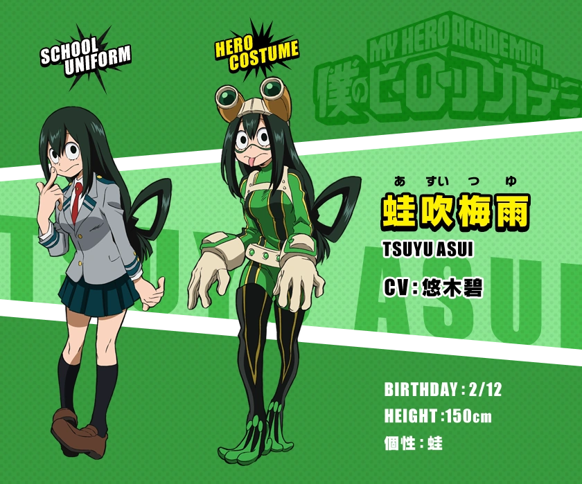

Цую Асуи
Цую Асуи
- Пол: ♀ Женский
- Рост: 150 см.
- Возраст: 16
- Группа крови: B(|||)
- Родился в: Японии
Цую Асуи (Asui Tsuyu), также известная, как Героиня сезона дождей: Фроппи — ученица класса 1-A академии Юэй, обучающаяся на профессиональную героиню.
Как бы вы не считали себя ответственными за сложившуюся ситуацию, если снова собираетесь драться... то нарушите правила и законы, и сами станете не лучше этих злодеев.
Внешность
Цую - довольно низкая, стройная девушка с лягушачьими чертами внешности, проявляющиеся в виде больших овальных глаз с полностью черными радужками и крупным ртом, подобно настоящей лягушке. Отличительной чертой являются весьма крупные кисти рук. Также у нее длинные темно-зеленые волосы, которые она обычно завязывает бантом на спине.

Ее геройский костюм зеленого цвета с черно-желтыми вставками - тоже имитирует внешность лягушки. Она носит большие очки, перчатки и сапоги в той же стилистике. Несмотря на ее трехпалые сапоги - ноги у Асуи человеческие. Зимняя версия костюма мало чем отличается, за исключением козырька, который находится на очках и особом воротнике с шарообразными концами. Скорее всего служит для регулирования температуры тела (т.к. лягушки хладнокровные существа - не исключено что Цую частично обладает этой особенностью)
Личность
Асуи является простой и прямолинейной девушкой, которая всегда озвучивает свои мысли относительно ситуации или людей. Предпочитает чтобы к ней обращались по имени - но только люди, которых она считает (или хочет считать) друзьями. К людям обычно обращается с уважительной приставкой "-тян", кроме учителей и других уважаемых личностей.
Достаточно наблюдательна, т.к. первая заметила сходство между причудами Изуку и Всемогущего. Также Цую зачастую ведет себя спокойно и собрано, способна не терять голову в стрессовых ситуациях: таких как нападение злодеев на USJ, вторжение Лиги злодеев в летний тренировочный лагерь. Исцеляющая Девочка описывает её как "совершенная опора эмоциональной поддержки". Однако и она иногда может проявить сильные эмоции в момент сильного стресса. Ее высказывания могут быть непреднамеренно резкими из-за прямолинейности, в результате чувствует себя виноватой если кого-то задела своими словами.
Ее обычное выражение лица не выражает никаких эмоций, что затрудняет понимание ее мыслей в определенные моменты. Во время размышлений или обычного любопытства - Асуи имеет привычку подносить указательный палец к своему подбородку.Также в качестве односложных ответов может издать звук "ква"
Причуда
 Форма лягушки: причуда Цую дарует ей способности лягушки - такие как: Прыжки на огромные расстояния; Способность прилипать к вертикальным поверхностям; Очень длинный и сильный язык, способный поднять человека; Возможность изрыгать свой желудок наружу; Выделять не слишком едкую кислоту; Способность к природному камуфляжу.
Форма лягушки: причуда Цую дарует ей способности лягушки - такие как: Прыжки на огромные расстояния; Способность прилипать к вертикальным поверхностям; Очень длинный и сильный язык, способный поднять человека; Возможность изрыгать свой желудок наружу; Выделять не слишком едкую кислоту; Способность к природному камуфляжу.